List of submissions
It follows the code and plot of the RainGauge of all RainMaker submissions to /submissions sorted in alphabetical order of the filename.
Charlotte Merchant: The Rapture: Big Super Mega Ultra Clapped Humid North Sea Mountain HR Injection Under More Pressure Initially and Corrected
path: /submissions/the_rapture.jl
rank: 1. of 16 submissions
# 1. All precipitation measured by the rain gauge has to be simulated by SpeedyWeather over a 20-day period.
# 2. The rain gauge must be placed at the agreed longitude and latitude coordinates.
# 3. No changes to the following physics inside SpeedyWeather: Large-scale condensation, convection, surface evaporation, or radiation.
# 4. Sea and land surface temperatures cannot exceed 305K anywhere during the simulation.
# 5. The simulation must remain stable over the 20-day period.
author = "Charlotte Merchant"
description = "The Rapture: Big Super Mega Ultra Clapped Humid North Sea Mountain HR Injection Under More Pressure Initially and Corrected"
using SpeedyWeather, RainMaker
spectral_grid = SpectralGrid(trunc=100, nlayers=8)
atm = EarthAtmosphere(spectral_grid)
clausius_clapeyron = ClausiusClapeyron(spectral_grid, atm, e₀=0.00001)
model = PrimitiveWetModel(spectral_grid; clausius_clapeyron)
Base.@kwdef struct inject <: SpeedyWeather.AbstractCallback
schedule::Schedule = Schedule(every=Hour(1))
end
function SpeedyWeather.initialize!(
callback::inject,
progn::PrognosticVariables,
diagn::DiagnosticVariables,
model::AbstractModel,
)
initialize!(callback.schedule, progn.clock)
end
function SpeedyWeather.callback!(
callback::inject,
progn::PrognosticVariables,
diagn::DiagnosticVariables,
model::AbstractModel,
)
isscheduled(callback.schedule, progn.clock) || return nothing
set!(progn, model.geometry, humid=(λ, φ, σ) -> 0.16)
set!(progn, model.geometry, temp=(λ, φ, σ) -> σ == 1 ? 305 : (σ > 0.8 ? 305 - 10 * (1 - σ) : (σ > 0.5 ? 290 + 5 * (1 - σ) : 250)))
set!(progn, model.geometry, u=(λ, φ, σ) -> -5.0)
set!(progn, model.geometry, v=(λ, φ, σ) -> 2.0)
set!(progn, model.geometry, div=(λ, φ, σ) -> σ > 0.8 ? -0.005 : (σ > 0.5 ? 0.0 : 0.005))
set!(progn, model.geometry, pres=20)
end
SpeedyWeather.finalize!(::inject, args...) = nothing
rain_gauge = RainGauge(spectral_grid, lond=-1.25, latd=51.75)
add!(model, rain_gauge)
add!(model, inject())
simulation = initialize!(model)
H, λ₀, φ₀, σ = 4000, 2, 51, 5
set!(model, orography=(λ,φ) -> H*exp(-spherical_distance((λ,φ), (λ₀,φ₀), radius=360/2π)^2/2σ^2))
set!(simulation, humid=0.16)
set!(simulation, pres=20)
run!(simulation, period=Day(20))
RainMaker.plot(rain_gauge)[ Info: Time step changed from 570297 to 540000 milliseconds (-5%) to match output frequency.
[ Info: Time step changed from 570297 to 540000 milliseconds (-5%) to match output frequency.
[ Info: Scheduler adjusted from every 1 hour to every 1 hour, 3 minutes to match timestep.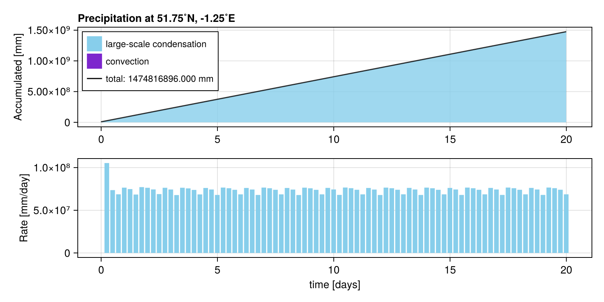
Danny Ash, Jowan Fromentin - Brain Drain: Rain Rain go away
path: /submissions/brain_drain.jl
rank: 2. of 16 submissions
mountain_positions_canada = [
(-3.35, 58.67),
(-4.87, 61.61),
(-6.74, 64.60),
(-9.12, 67.60),
(-12.22, 70.58),
(-16.39, 73.50),
(-22.23, 76.30),
(-30.76, 78.87),
(-43.59, 81.04),
(-62.35, 82.50)
]
author = "Danny Ash, Jowan Fromentin - Brain Drain"
description = "Rain Rain go away"
using SpeedyWeather, RainMaker
using CairoMakie
spectral_grid = SpectralGrid(trunc=31, nlayers=5)
time_stepping = Leapfrog(spectral_grid, Δt_at_T31=Minute(0.5))
# define aquaplanet
ocean = AquaPlanet(spectral_grid, temp_equator=200, temp_poles=305)
land_sea_mask = AquaPlanetMask(spectral_grid)
orography = NoOrography(spectral_grid)
model = PrimitiveWetModel(spectral_grid; ocean, land_sea_mask, orography, time_stepping=time_stepping)
rain_gauge = RainGauge(spectral_grid, lond=-1.25, latd=51.75)
add!(model, rain_gauge)
simulation = initialize!(model)
set!(simulation, humid=6, pres =15.1)
# build the wall
H, λ₀, φ₀, σ = 8000, 2, 51, 1 # height, lon, lat position, and width
H_c = 5000
set!(model, orography=(λ, φ) -> begin
orography = 0.0
for (λ₀, φ₀) in mountain_positions_canada
orography += H_c * exp(-spherical_distance((λ, φ), (λ₀, φ₀), radius=360/2π)^2 / 2σ^2)
end
orography
end, add=true)
set!(model, orography=(λ, φ) -> begin
orography = 0.0
mountain_positions = [(0, 50), (1, 50), (2, 50), (0, 55), (1, 55), (2, 55), (0, 60), (1, 60)]
for (λ₀, φ₀) in mountain_positions
orography += H * exp(-spherical_distance((λ, φ), (λ₀, φ₀), radius=360/2π)^2 / 2σ^2)
end
orography
end, add=true)
# dig the hole
H, λ₀, φ₀, σ = -6000, -1.25, 51.75, 100.5 # height, lon, lat position, and width
set!(model, orography=(λ,φ) -> H*exp((-(λ-λ₀)^2 - (φ-φ₀)^2)/2σ^2), add=true)
run!(simulation, period=Day(20))
total_precip = maximum(rain_gauge.accumulated_rain_large_scale) + maximum(rain_gauge.accumulated_rain_convection)
println(total_precip)
RainMaker.plot(rain_gauge)
# heatmap(model.orography.orography)
# println(maximum(simulation.prognostic_variables.ocean.sea_surface_temperature))┌ Warning: NaN or Inf detected at time step 5166
└ @ SpeedyWeather ~/.julia/packages/SpeedyWeather/pliqj/src/output/feedback.jl:144
1.4835839e6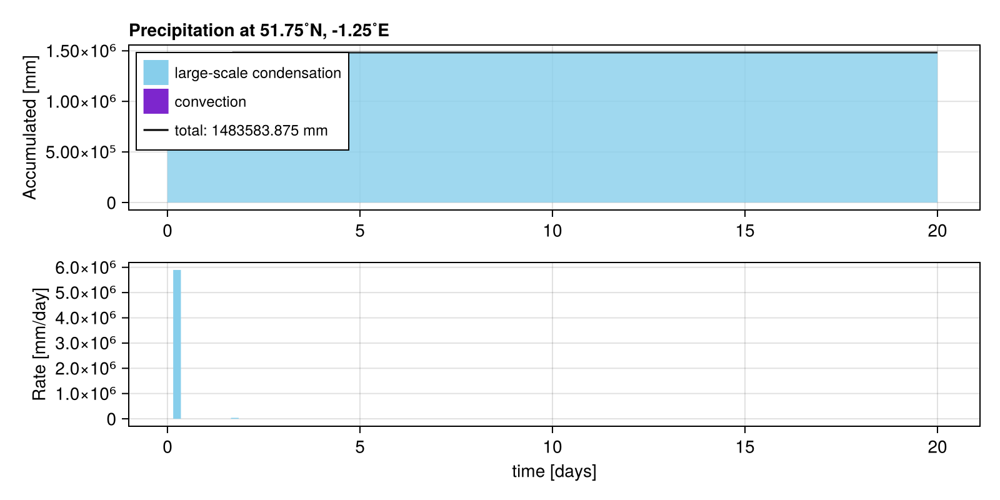
Amy and breddy: Reddy4rain
path: /submissions/reddy4rain.jl
rank: 3. of 16 submissions
author = "Amy and breddy"
description = "Reddy4rain"
using SpeedyWeather, RainMaker
spectral_grid = SpectralGrid(trunc=12, nlayers=3, Grid=FullGaussianGrid) # default resolution
rain_gauge = RainGauge(spectral_grid, lond=358.75, latd=51.75)
model = PrimitiveWetModel(spectral_grid)
model.callbacks
simulation = initialize!(model, time=DateTime(2024, 10, 1))
# (; a, b) = struct unpacks the fields a, b in struct identified by name, equivalent to
# a = struct.a and b = struct.b
(; precip_large_scale, precip_convection) = simulation.diagnostic_variables.physics
total_precipitation = precip_large_scale + precip_convection
total_precipitation *= 1000# convert m to mm
# add two Gaussian mountains
λ1, λ2 = (320, 345) # longitude positions [˚E]
φ₀ = 50 # latitude [˚N]\
σ = 5 # width [˚]
H = 7000
# first mountain, radius=360/2π to have distance in ˚ again (not meters)
set!(model, orography=(λ,φ) -> H*exp(-spherical_distance((λ,φ), (λ1,φ₀), radius=360/2π)^2/2σ^2), add=true)
# and add second
set!(model, orography=(λ,φ) -> H*exp(-spherical_distance((λ,φ), (λ2,φ₀), radius=360/2π)^2/2σ^2), add=true)
simulation.diagnostic_variables.physics.precip_large_scale .= 0
simulation.diagnostic_variables.physics.precip_convection .= 0
set!(simulation, sea_surface_temperature=(λ, φ) -> (30 < φ < 60) && (300 < λ < 360) ? 2 : 0, add=true)
# add one rain gauge the measures the whole simulation
rain_gauge_from_beginning = RainGauge(spectral_grid, lond=-1.25, latd=51.75)
add!(model, rain_gauge_from_beginning)
run!(simulation, period=Week(1))
# add one rain gauge the measures the whole simulation
rain_gauge_from_w2 = RainGauge(spectral_grid, lond=-1.25, latd=51.75)
add!(model, rain_gauge_from_w2)
run!(simulation, period=Week(2))
set!(simulation, humid=0.3, pres=15.1)
# add another rain gauge that only starts measuring
# after that week we already simulated
rain_gauge_after_spinup = RainGauge(spectral_grid, lond=-1.25, latd=51.75)
add!(model, rain_gauge_after_spinup)
add!(model, rain_gauge)
run!(simulation, period=Day(20))
# now compare them, from the beginning
rain_gauge_from_beginning┌ Warning: NaN or Inf detected at time step 138
└ @ SpeedyWeather ~/.julia/packages/SpeedyWeather/pliqj/src/output/feedback.jl:144Isaac Campbell: Up initial humidity and lower saturation vapour pressure.
path: /submissions/isaaccampbell.jl
rank: 4. of 16 submissions
author = "Isaac Campbell"
description = "Up initial humidity and lower saturation vapour pressure."
using SpeedyWeather, RainMaker
# Create grid
spectral_grid = SpectralGrid(trunc=31, nlayers=8)
# Alter the laws of physics... lower saturation vapour pressure to 50Pa
atm = EarthAtmosphere(spectral_grid)
clausius_clapeyron = ClausiusClapeyron(spectral_grid, atm, e₀=50)
model = PrimitiveWetModel(spectral_grid; clausius_clapeyron)
# add the rain gauge as callback
rain_gauge = RainGauge(spectral_grid, lond=-1.25, latd=51.75)
add!(model, rain_gauge)
# run the simulation
simulation = initialize!(model, time=DateTime(2000, 8, 1))
# Increase initial humidity
set!(simulation, humid=0.177)
run!(simulation, period=Day(20))
# visualise
RainMaker.plot(rain_gauge)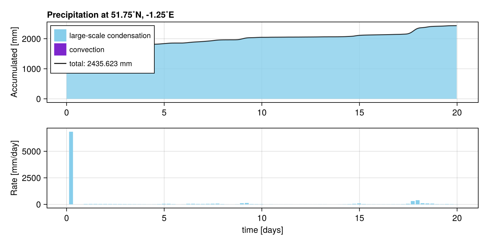
Alex Dobra and Charlotte Wargniez: Aqua planet, change humidity to ridiculous number, add Shirin's mountain, make it cold
path: /submissions/ac_humid.jl
rank: 5. of 16 submissions
author = "Alex Dobra and Charlotte Wargniez"
description = "Aqua planet, change humidity to ridiculous number, add Shirin's mountain, make it cold"
using SpeedyWeather, RainMaker
spectral_grid = SpectralGrid(trunc=31, nlayers=5)
model = PrimitiveWetModel(spectral_grid)
# Set up aqauaplanet but add large mountain in "North Sea" after initialization!
ocean = AquaPlanet(spectral_grid, temp_equator=305, temp_poles=305
)
land = ConstantLandTemperature(spectral_grid, temperature=275)
model = PrimitiveWetModel(spectral_grid; ocean, land)
# Add rain gauge
rain_gauge = RainGauge(spectral_grid, lond=-1.25, latd=51.75)
add!(model, rain_gauge)
# Initialize and run simulation
simulation = initialize!(model, time=DateTime(2000, 6, 21))
# Add mountain now! details for mountain
H, λ₀, φ₀, σ = 5000, 2, 51, 3 # height, lon, lat position, and width
set!(model, orography=(λ,φ) -> H*exp(-spherical_distance((λ,φ), (λ₀,φ₀), radius=360/2π)^2/2σ^2))
# make mountain Land
set!(model, land_sea_mask=(λ, φ) -> H*exp(-spherical_distance((λ,φ), (λ₀,φ₀), radius=360/2π)^2/2σ^2), add=true)
# set humidity
set!(simulation, humid=9e-2,
# temp=275
)
# Run simulation for 20 days
run!(simulation, period=Day(20))
RainMaker.plot(rain_gauge, rate_Δt=Hour(1))┌ Warning: Land-sea mask was not set to values in [0, 1] but in [0.0, 4370.175]. Clamping.
└ @ SpeedyWeather ~/.julia/packages/SpeedyWeather/pliqj/src/physics/land_sea_mask.jl:70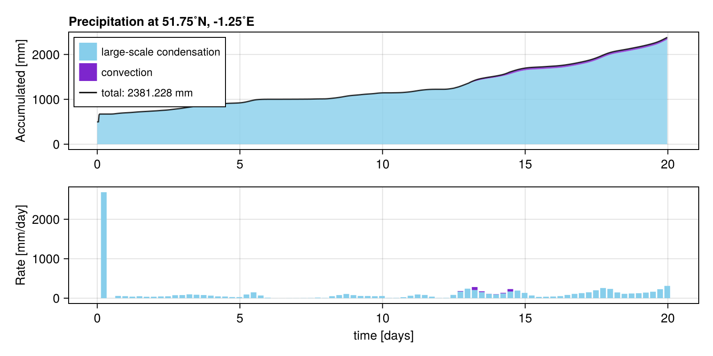
Minqi: humid & montain
path: /submissions/minqi_submission.jl
rank: 6. of 16 submissions
author = "Minqi"
description = "humid & montain"
using SpeedyWeather, RainMaker
spectral_grid = SpectralGrid(trunc=25, nlayers=8)
time_stepping = Leapfrog(spectral_grid, Δt_at_T31=Minute(10))
model = PrimitiveWetModel(spectral_grid; time_stepping)
rain_gauge = RainGauge(spectral_grid, lond=-1.25, latd=51.75)
add!(model, rain_gauge)
simulation = initialize!(model)
set!(simulation, humid=0.185)
H, λ₀, φ₀, σ = 10000, 2, 51, 1
set!(model, orography=(λ,φ) -> H*exp(-spherical_distance((λ,φ), (λ₀,φ₀), radius=360/2π)^2/2σ^2))
run!(simulation, period=Day(20))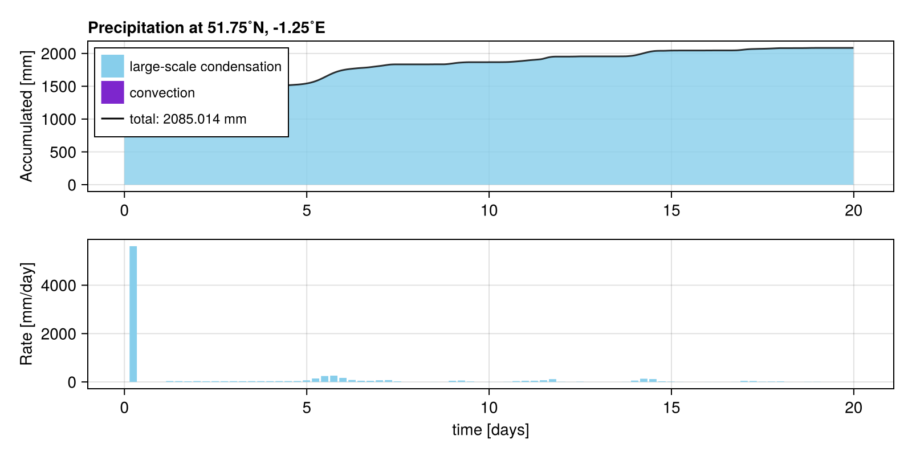
Maren: Hot aqua planet with SST anomalie
path: /submissions/maren.jl
rank: 7. of 16 submissions
author = "Maren"
description = "Hot aqua planet with SST anomalie"
using SpeedyWeather, RainMaker
using CairoMakie
# create a model
spectral_grid = SpectralGrid(trunc=31, nlayers=8)
ocean = AquaPlanet(spectral_grid, temp_equator = 300.0, temp_poles= 300.0)
model = PrimitiveWetModel(spectral_grid; ocean)
# add the rain gauge as callback
rain_gauge = RainGauge(spectral_grid, lond=-1.25, latd=51.75)
add!(model, rain_gauge)
simulation = initialize!(model)
set!(simulation, humid=0.18)
set!(simulation, sea_surface_temperature=(λ, φ) -> (50 < φ < 53) && (50 < λ < 60) ? 5 : 0, add=true)
run!(simulation, period=Day(20))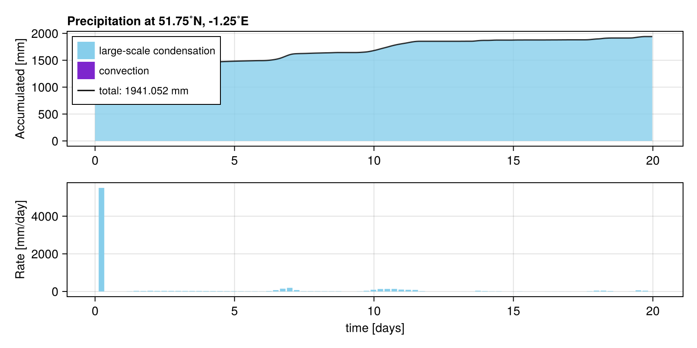
George: default
path: /submissions/grabin.jl
rank: 8. of 16 submissions
author = "George"
using SpeedyWeather, RainMaker
# create a model
spectral_grid = SpectralGrid(trunc=31, nlayers=8)
ocean = AquaPlanet(spectral_grid)
land = ConstantLandTemperature(spectral_grid)
model = PrimitiveWetModel(spectral_grid; ocean)
# add the rain gauge as callback
rain_gauge = RainGauge(spectral_grid, lond=-1.25, latd=51.75)
add!(model, rain_gauge)
# run the simulation
simulation = initialize!(model, time=DateTime(2000, 10, 25))
simulation.prognostic_variables.clock
# CHANGING sea surface and land temperature
simulation = initialize!(model)
set!(model, land_sea_mask=0) # all ocean
set!(simulation, sea_surface_temperature=(λ, φ) -> (30 < φ < 60) && (270 < λ < 360) ? 1 : 0, add=true)
simulation = initialize!(model)
set!(model, land_sea_mask=1) # all land
set!(simulation, sea_surface_temperature=(λ, φ) -> (0 < φ < 360) && (270 < λ < 360) ? 10 : 0, add=true)
sst = simulation.prognostic_variables.ocean.sea_surface_temperature
# ADDING A mountain
H, λ₀, φmax = 2000, 15, 60
# set to a global constant
set!(model, orography=0)
# add two Gaussian mountains
λ1, λ2 = (120, 240) # longitude positions [˚E]
φ₀ = 44 # latitude [˚N]
σ = 7.4 # width [˚]
# himalayan mountains lead to more rain than ones in eastern europe...
# first mountain, radius=360/2π to have distance in ˚ again (not meters)
set!(model, orography=(λ,φ) -> H*exp(-spherical_distance((λ,φ), (λ1,φ₀), radius=360/2π)^2/2σ^2), add=true)
# and add second
set!(model, orography=(λ,φ) -> H*exp(-spherical_distance((λ,φ), (λ2,φ₀), radius=360/2π)^2/2σ^2), add=true)
set!(simulation, humid=0.18)
run!(simulation, period=Day(20))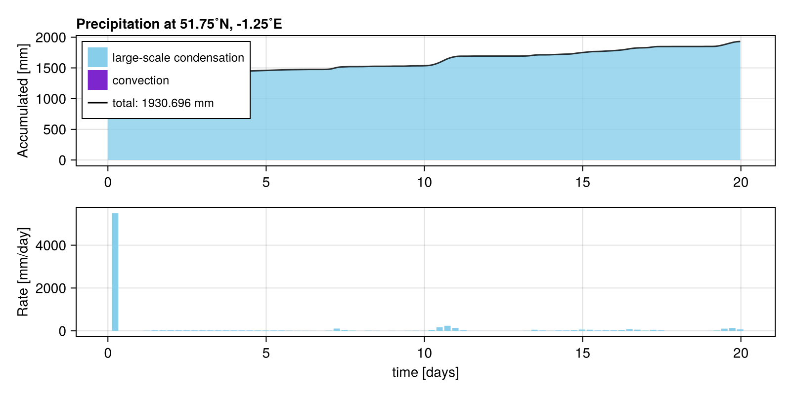
Thomas Stone: Humid
path: /submissions/thomas.jl
rank: 9. of 16 submissions
author = "Thomas Stone"
description = "Humid"
using SpeedyWeather, RainMaker
# create a model
spectral_grid = SpectralGrid(trunc=31, nlayers=8)
ocean = AquaPlanet(spectral_grid)
model = PrimitiveWetModel(spectral_grid; ocean)
# add the rain gauge as callback
rain_gauge = RainGauge(spectral_grid, lond=-1.25, latd=51.75)
add!(model, rain_gauge)
# run the simulation
simulation = initialize!(model, time=DateTime(2000,10,25))
simulation.prognostic_variables.clock
# add 2 K to N Atlantic
simulation = initialize!(model)
set!(model, land_sea_mask=0) # all ocean!
set!(simulation, sea_surface_temperature=(λ, φ) -> (30 < φ < 60) && (270 < λ < 360) ? 10 : 0, add=true)
# set to a global constant
set!(model, orography=0)
# add two 2000m ridges at +-30˚E from 60˚S to 60˚N
H, λ₀, φmax = 20000, 15, 60
# add two Gaussian mountains
λ1, λ2 = (120, 240) # longitude positions [˚E]
φ₀ = 44 #latitude
σ = 7.4 # width [˚]
# first mountain, radius=360/2π to have distance in ˚ again (not meters)
set!(model, orography=(λ,φ) -> H*exp(-spherical_distance((λ,φ), (λ1,φ₀), radius=360/2π)^2/2σ^2), add=true)
# and add second
set!(model, orography=(λ,φ) -> H*exp(-spherical_distance((λ,φ), (λ2,φ₀), radius=360/2π)^2/2σ^2), add=true)
set!(simulation, humid=0.18)
run!(simulation, period=Day(20))
# visualise
RainMaker.plot(rain_gauge)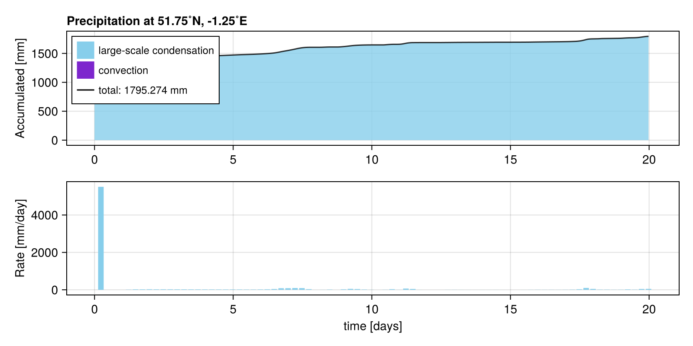
Bradley and Lukas: big humid
path: /submissions/big_humid.jl
rank: 10. of 16 submissions
author = "Bradley and Lukas"
description = "big humid"
using SpeedyWeather, RainMaker
spectral_grid = SpectralGrid(trunc=60, nlayers=8) #60
ocean = AquaPlanet(spectral_grid, temp_equator=302, temp_poles=300)
model = PrimitiveWetModel(spectral_grid; ocean=ocean)
rain_gauge = RainGauge(spectral_grid, lond=-1.25, latd=51.75)
add!(model, rain_gauge)
simulation = initialize!(model)
H, λ₀, φ₀, σ = 4000, 2, 51, 5 # height, lon, lat position, and width
set!(model, orography=(λ,φ) -> H*exp(-spherical_distance((λ,φ), (λ₀,φ₀), radius=360/2π)^2/2σ^2))
set!(simulation, humid=0.12)
run!(simulation, period=Day(20))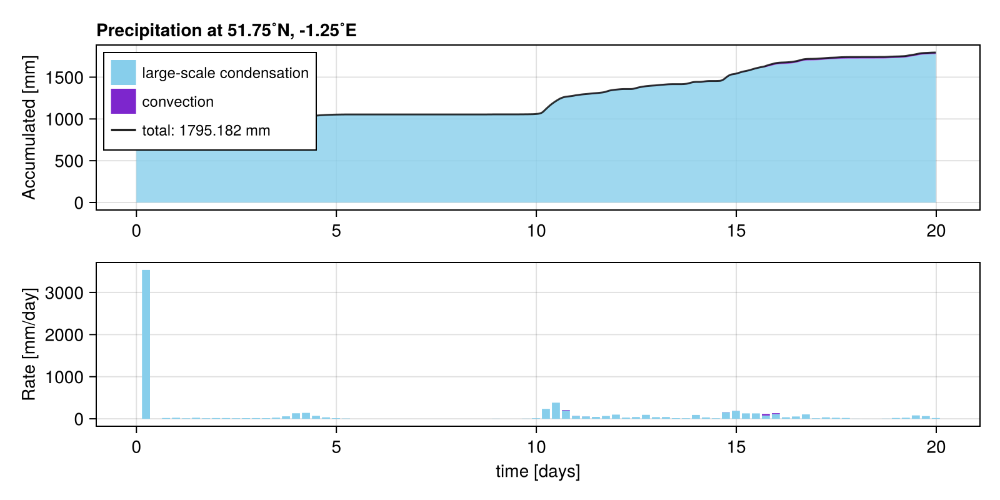
Jordan: Up initial humidity and lower saturation vapour pressure.
path: /submissions/jordan.jl
rank: 11. of 16 submissions
author = "Jordan"
using SpeedyWeather, RainMaker
spectral_grid = SpectralGrid(trunc=31, nlayers=8)
ocean = AquaPlanet(spectral_grid, temp_equator=302, temp_poles=301)
land = ConstantLandTemperature(spectral_grid)
model = PrimitiveWetModel(spectral_grid; ocean, land)
# add the rain gauge as callback
rain_gauge = RainGauge(spectral_grid, lond=-1.25, latd=51.75)
add!(model, rain_gauge)
simulation = initialize!(model)
set!(model, land_sea_mask=0) # all ocean!
set!(simulation, sea_surface_temperature=(λ, φ) -> (10 < φ < 20) && (52 < λ < 58) ? 3 : 0.5, add=true)
# set to a global constant
set!(model, orography=0)
H, λ₀, φmax = 10000, 15, 60
# add two Gaussian mountains
λ1, λ2 = (120, 240) # longitude positions [˚E]
φ₀ = 45 # latitude [˚N]
σ = 5 # width [˚]
# first mountain, radius=360/2π to have distance in ˚ again (not meters)
set!(model, orography=(λ,φ) -> H*exp(-spherical_distance((λ,φ), (λ1,φ₀), radius=360/2π)^2/2σ^2), add=true)
set!(simulation, humid=0.15)
run!(simulation, period=Day(20))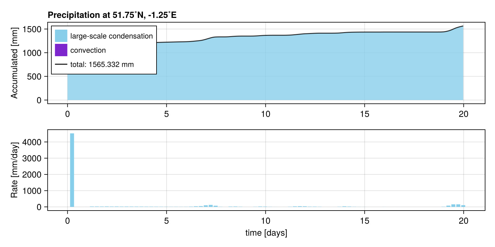
Shirin Ermis: Aqua-planet simulation with a mountain
path: /submissions/aquaplanet_mountain.jl
rank: 12. of 16 submissions
author = "Shirin Ermis"
description = "Aqua-planet simulation with a mountain"
using SpeedyWeather, RainMaker
spectral_grid = SpectralGrid(trunc=31, nlayers=10)
model = PrimitiveWetModel(spectral_grid)
# Set up aqauaplanet but add large mountain in "North Sea" after initialization!
ocean = AquaPlanet(spectral_grid, temp_equator=302, temp_poles=300)
land_sea_mask = AquaPlanetMask(spectral_grid)
model = PrimitiveWetModel(spectral_grid; ocean, land_sea_mask)
# Add rain gauge
rain_gauge = RainGauge(spectral_grid, lond=-1.25, latd=51.75)
add!(model, rain_gauge)
# Initialize and run simulation
simulation = initialize!(model, time=DateTime(2000, 9, 1))
# Add mountain now! details for mountain
H, λ₀, φ₀, σ = 4000, 2, 51, 5 # height, lon, lat position, and width
set!(model, orography=(λ,φ) -> H*exp(-spherical_distance((λ,φ), (λ₀,φ₀), radius=360/2π)^2/2σ^2))
# Run simulation for 20 days
run!(simulation, period=Day(20))
# Plot the results (not needed for submission but doesn't hurt!)
using CairoMakie
# heatmap(model.orography.orography, title="My orogoraphy [m]") # check orography
RainMaker.plot(rain_gauge, rate_Δt=Hour(1))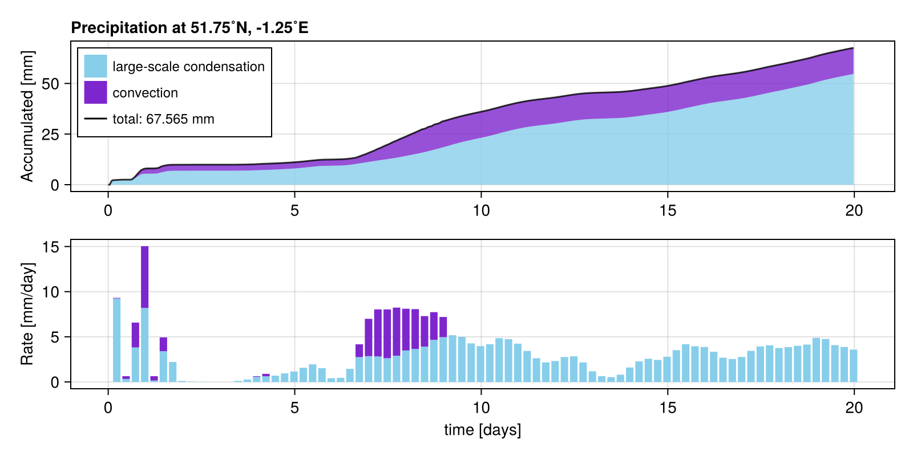
Tim Reichelt: North Sea mountain
path: /submissions/north_sea_mountain.jl
rank: 13. of 16 submissions
author = "Tim Reichelt"
description = "North Sea mountain"
using SpeedyWeather, RainMaker
spectral_grid = SpectralGrid(trunc=31, nlayers=8)
model = PrimitiveWetModel(spectral_grid)
rain_gauge = RainGauge(spectral_grid, lond=-1.25, latd=51.75)
add!(model, rain_gauge)
simulation = initialize!(model)
# add a massive mountain at 51.75°N, 0°W, *after* model initialization
# using spherical_distance for geodesic distances, use radius=360/2π for distance in degrees
H, λ₀, φ₀, σ = 4000, 2, 51, 5 # height, lon, lat position, and width
set!(model, orography=(λ,φ) -> H*exp(-spherical_distance((λ,φ), (λ₀,φ₀), radius=360/2π)^2/2σ^2))
run!(simulation, period=Day(20))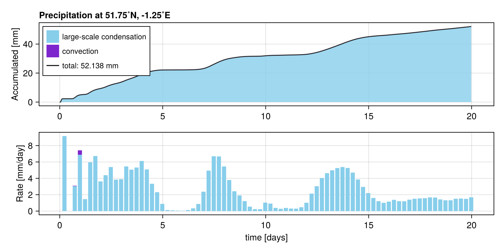
Milan: default
path: /submissions/default.jl
rank: 14. of 16 submissions
author = "Milan"
description = "default"
using SpeedyWeather, RainMaker
spectral_grid = SpectralGrid(trunc=31, nlayers=8)
model = PrimitiveWetModel(spectral_grid)
rain_gauge = RainGauge(spectral_grid, lond=-1.25, latd=51.75)
add!(model, rain_gauge)
simulation = initialize!(model)
run!(simulation, period=Day(20))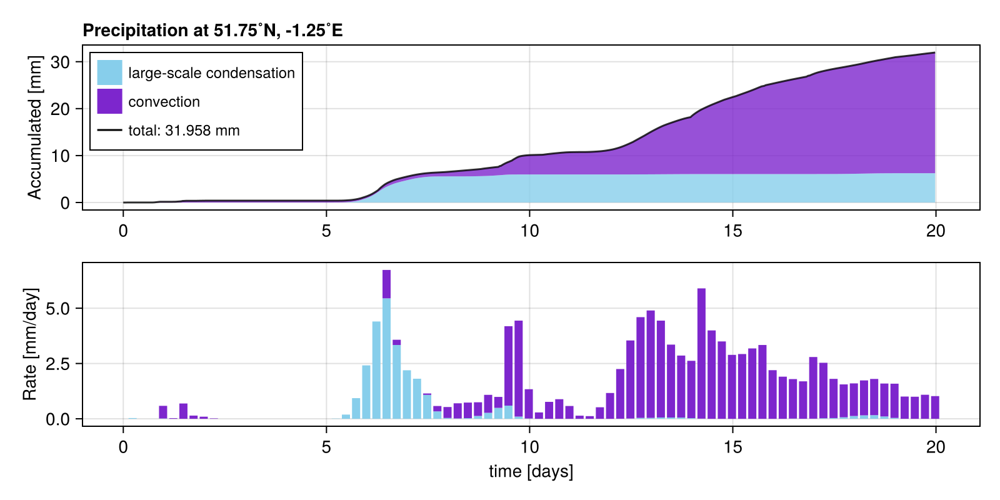
Milan: Aquaplanet
path: /submissions/aquaplanet.jl
rank: 15. of 16 submissions
author = "Milan"
description = "Aquaplanet"
using SpeedyWeather, RainMaker
spectral_grid = SpectralGrid(trunc=31, nlayers=8)
# define aquaplanet
ocean = AquaPlanet(spectral_grid, temp_equator=302, temp_poles=273)
land_sea_mask = AquaPlanetMask(spectral_grid)
orography = NoOrography(spectral_grid)
model = PrimitiveWetModel(spectral_grid; ocean, land_sea_mask, orography)
rain_gauge = RainGauge(spectral_grid, lond=-1.25, latd=51.75)
add!(model, rain_gauge)
simulation = initialize!(model)
run!(simulation, period=Day(20))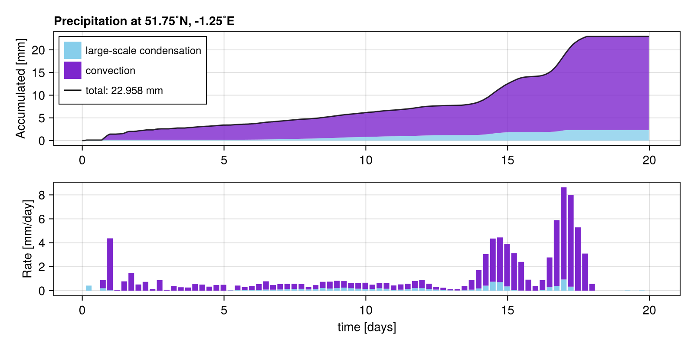
Milan: Atlantic mountain
path: /submissions/atlantic_mountain.jl
rank: 16. of 16 submissions
author = "Milan"
description = "Atlantic mountain"
using SpeedyWeather, RainMaker
spectral_grid = SpectralGrid(trunc=31, nlayers=8)
model = PrimitiveWetModel(spectral_grid)
rain_gauge = RainGauge(spectral_grid, lond=-1.25, latd=51.75)
add!(model, rain_gauge)
simulation = initialize!(model)
# add a massive mountain at 50°N, 35°W, *after* model initialization
H, λ₀, φ₀, σ = 4000, 325, 50, 5 # height, lon, lat position, and width
set!(model, orography=(λ,φ) -> H*exp((-(λ-λ₀)^2 - (φ-φ₀)^2)/2σ^2), add=true)
run!(simulation, period=Day(20))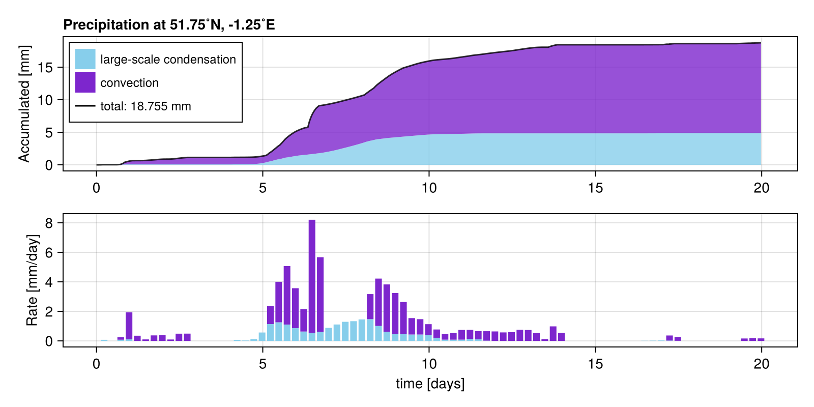